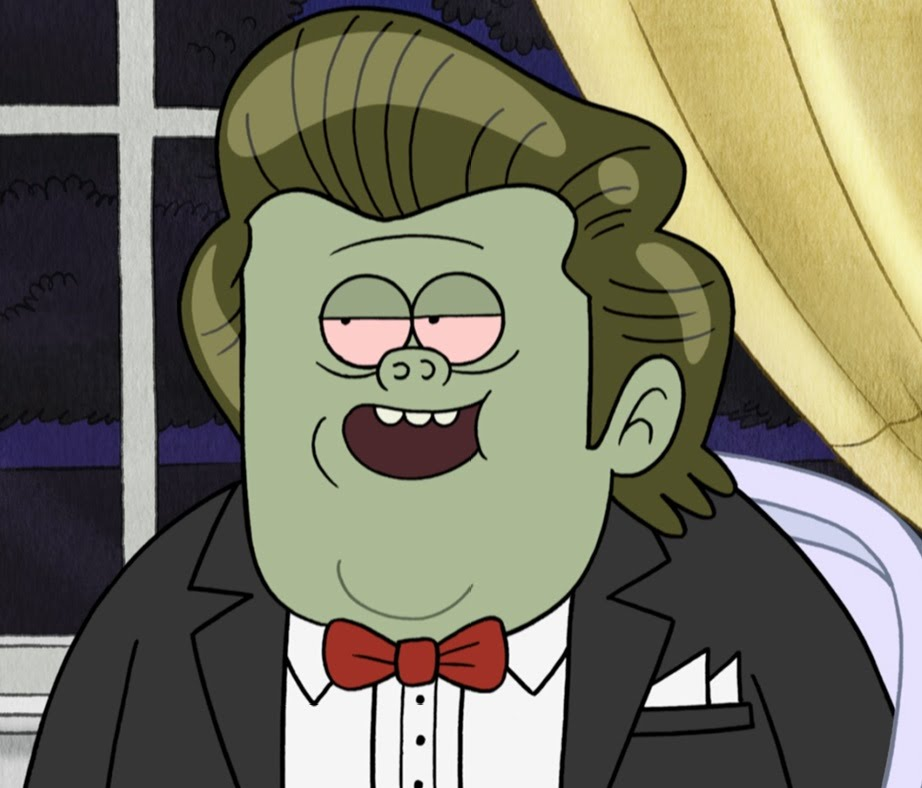
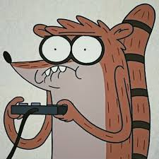

Mordecai, a tall blue jay from Regular Show, is a laid-back, artistic, and sometimes awkward character. He works as a groundskeeper at the park alongside his best friend, Rigby. Known for his love of video games, music, and slacking off, Mordecai often navigates life’s challenges with humor and heart.

Muscle Man, a green, stocky park groundskeeper in Regular Show, is loud, crude, and known for his “My mom!” jokes. Despite his obnoxious humor and unpredictable antics, he’s deeply loyal to his friends. Muscle Man’s wild personality and surprising moments of sincerity make him a standout character..

Rigby, a hyperactive raccoon from *Regular Show*, is mischievous, impulsive, and often immature. As Mordecai’s best friend and fellow park groundskeeper, he loves video games, pranks, and slacking off. Though his reckless behavior causes chaos,
Get to Know it
It is all about the wild, everyday adventures of two best friends, Mordecai and Rigby, who somehow turn the most ordinary tasks into total chaos. Mordecai, a tall blue jay, is the chill, artistic one who tries (and often fails) to be the responsible adult. He’s the guy who overthinks things, crushes hard, and just wants to coast through life with some good music and video games. Then there’s Rigby, a hyperactive raccoon who’s all impulse, zero filter. He’s loud, messy, and usually the one dragging Mordecai into trouble—but deep down, he’s loyal and just wants to have fun.
Throw in Muscle Man, the loud, green-skinned dude who lives for dumb jokes—especially his infamous “My mom!” punchlines—and you’ve got the ultimate trio of slackers. He’s crude, weird, and somehow still lovable, especially when he shows his softer side. Together, these guys, along with their other quirky coworkers like Pops, Benson, and Skips, turn simple park duties into epic, reality-bending adventures.
At its core, *Regular Show* is about friendship, growing up (kind of), and finding fun in the mundane. It’s weird, hilarious, and somehow still super relatable—just two dudes trying to figure life out, one ridiculous mess at a time.